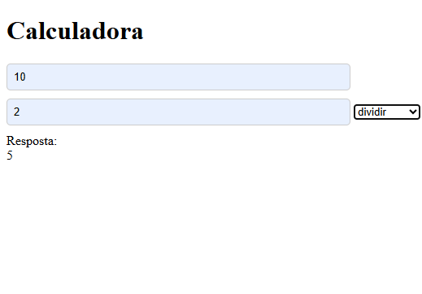
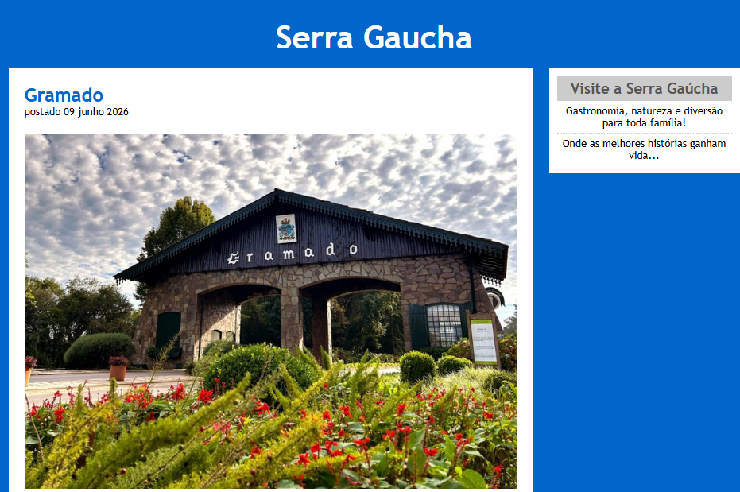

Portfólio
Trabalhos desenvolvidos:

Site Tecnológica
Exercício (site) desenvolvido na aula prática 2 do curso de CST ADS Uninter-disciplina de Fundamentos da Programação Web.
Clique para ver
Calculadora
Trabalho desenvolvido no curso de CST ADS Uninter-disciplina de Fundamentos de Desenvolvimento de Softwares.
Calculadora que realiza operações de somar, subtrair, multiplicar e dividir dois números informados pelo usuário.
Clique para ver